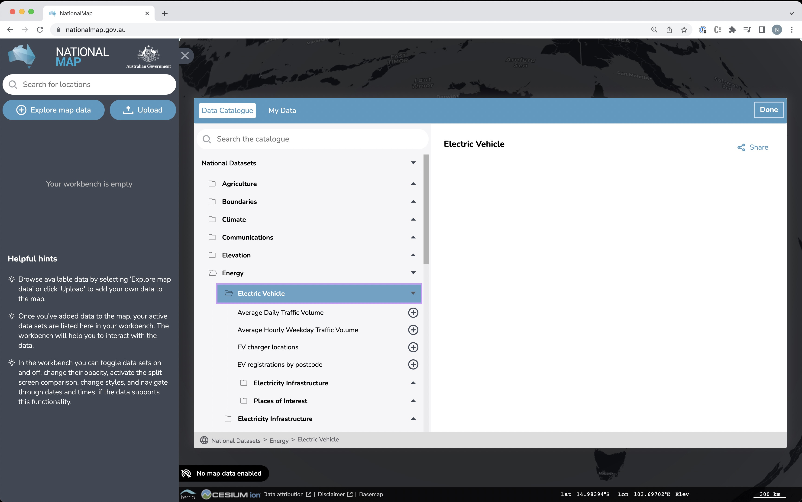
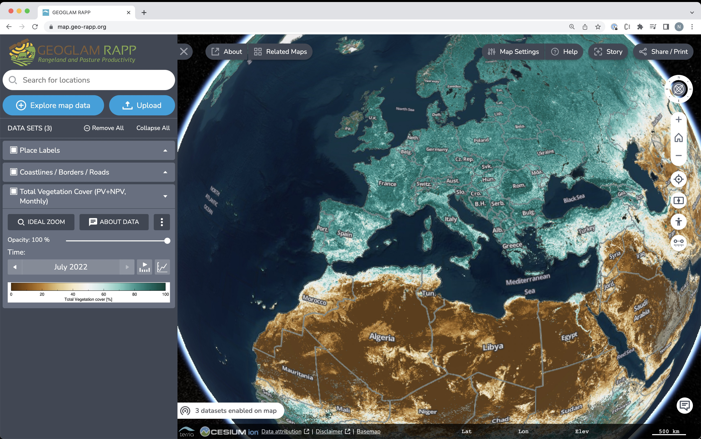
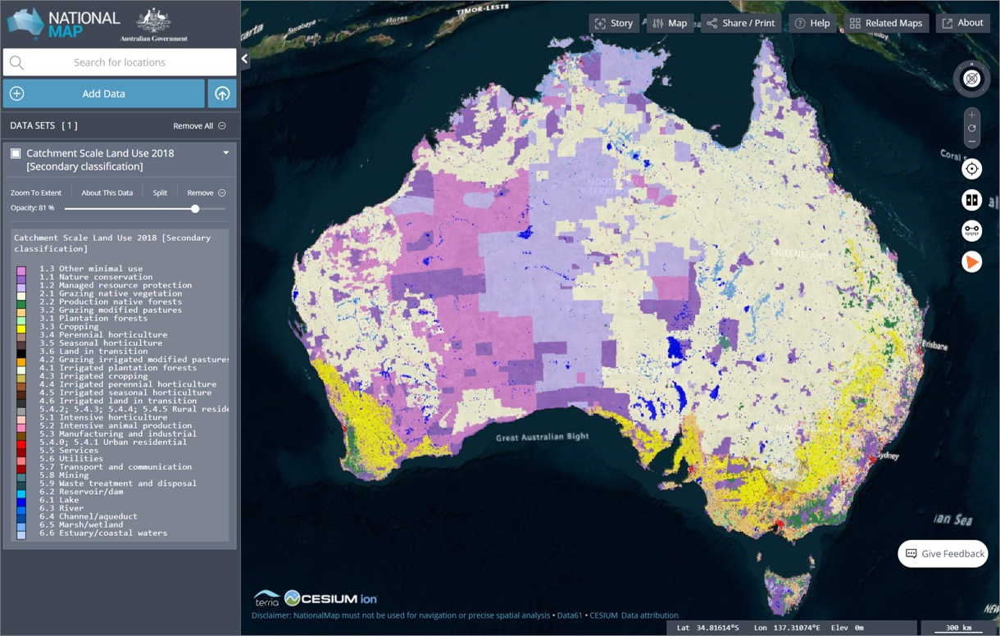
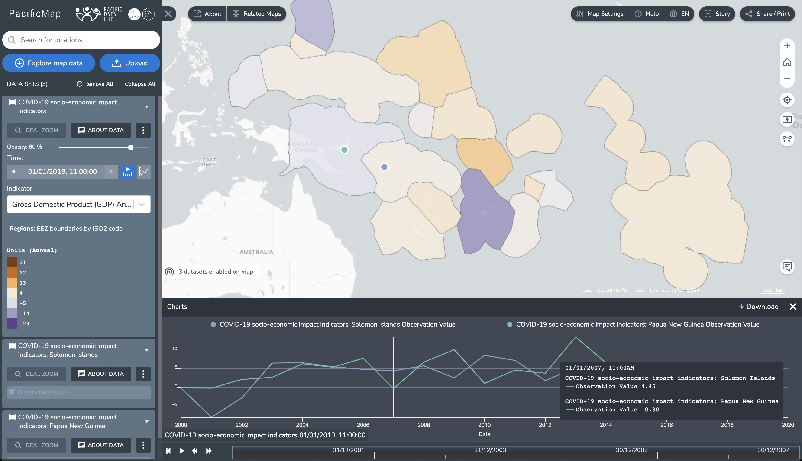
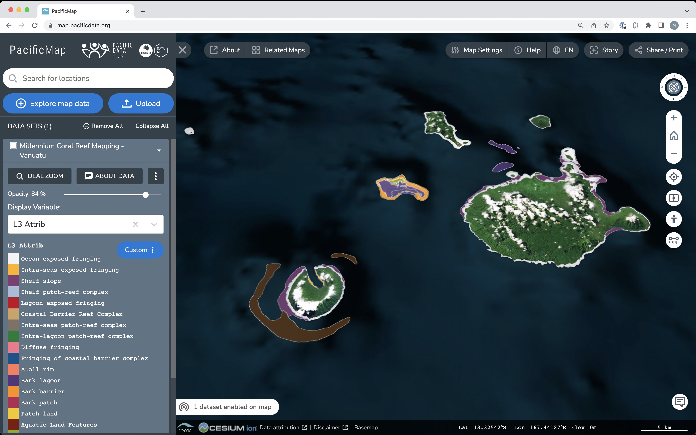
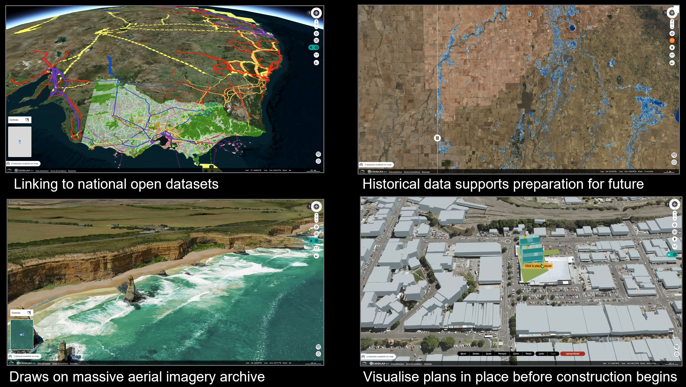
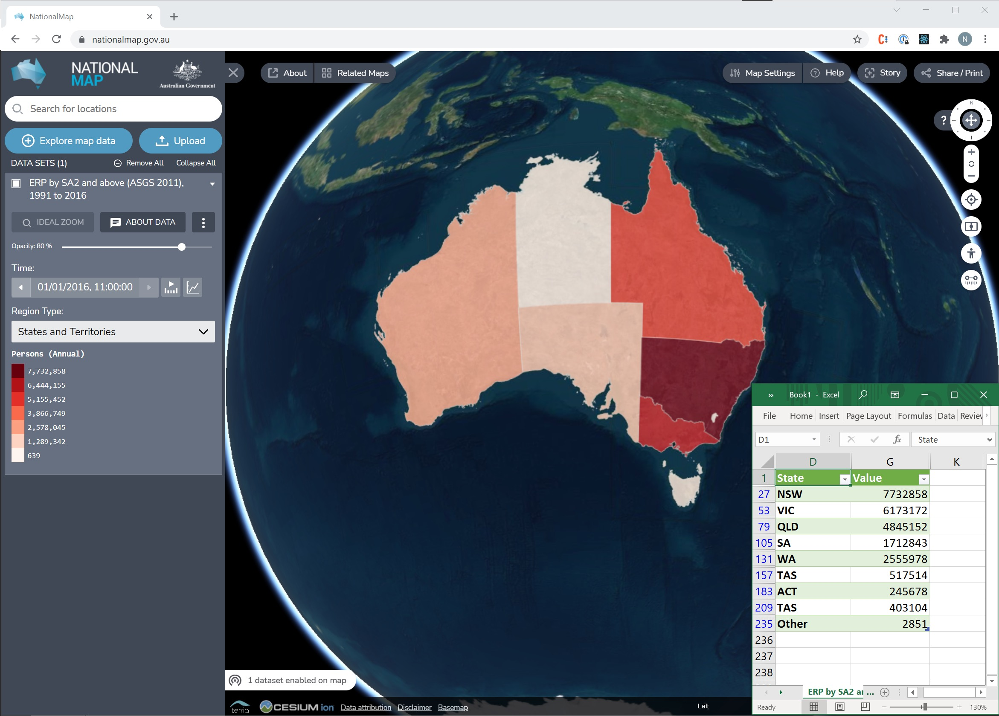
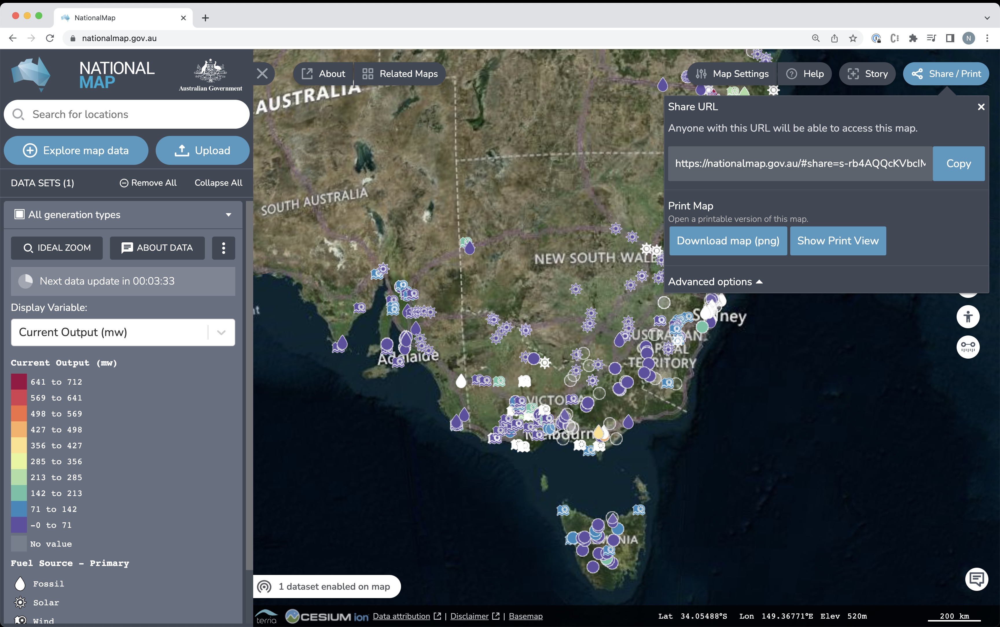
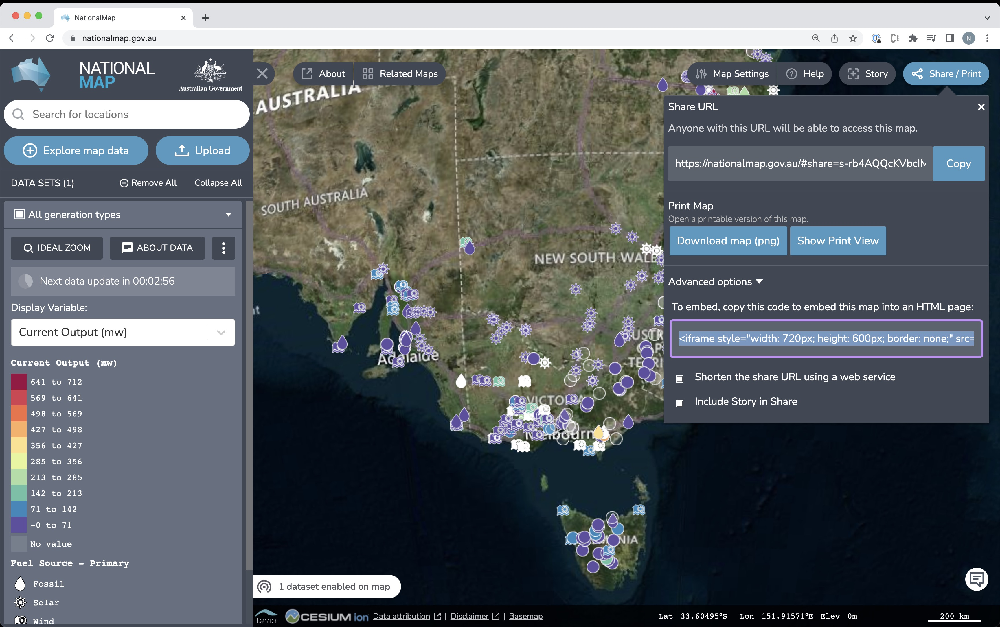

## Exploring the World’s Open Data Portals Discovery, Visualisation and Analysis of Open Data with TerriaJS <span style="font-weight: 100; font-size: 50%;">Nick Forbes-Smith — CSIRO's Data61 — Sydney/Hobart, Australia</span><br> <span style="font-weight: 100; font-size: 50%;"></span>https://nf-s.github.io/foss4g-terria-open-data/</span>
## CSIRO *Australia’s national science agency* </img>
## Terria - An open-source framework for web-based geospatial catalogue explorers - **Cesium/Leaflet** based in-browser tool for looking at 2D and 3D data - Australian team working at CSIRO's Data61 - Find us at [terria.io](http://terria.io/)
## Terria - Catalog - Map - Data controls
## Catalog - Tree structure - Search </img>
## Map! - 3D with 2D fallback <img src="img/map.jpg" width="700px"></img>
## Data controls - Workbench - Panels/Tools </img>
## How? FOSS! - Leaflet (2D) / Cesium (3D) - React / mobX - Protomaps.js (vector tiles) - d3, turf.js - TypeScript
## Our maps - **Open** - Open data portal focus - client-side heavy - **Closed** - Digital twin - 3D data focus - closed/proprietary formats - server-side heavy
## Open maps - Open data portal focus - client-side heavy - All using same open-source code-base - just configuration!
## NationalMap - Launched 2014 to support Aus Gov Open Data Policy - 14,000+ datasets, 30,000+ sessions/month </img>
## NationalMap Open Data <a href="https://nationalmap.gov.au/">nationalmap.gov.au</a> - 46 open data portals - (1105 curated datasets) **Total 14,000+ datasets**
## NationalMap catalog <a href="https://nationalmap.gov.au/">nationalmap.gov.au</a> </img>
## NationalMap data <a href="https://nationalmap.gov.au/">nationalmap.gov.au</a> <img src="img/natmap-energy.jpg" width="900px"></img>
## Digital Earth Aus/Africa <a href="maps.dea.ga.gov.au">maps.dea.ga.gov.au</a> + <a href="maps.digitalearth.africa">maps.digitalearth.africa</a> - With Geoscience Australia - **Landsat/Sentinel satellite imagery** - Satellite imagery derived products and "analysis ready data" - Integrated with **OpenDataCube** OWS <img src="img/demaps.jpg" width="800px"></img>
## Digital Earth Australia <a href="https://maps.dea.ga.gov.au/story/DEALandCover">maps.dea.ga.gov.au/story/DEALandCover</a> <img src="img/dea-aus-landcover.jpg" width="800px"></img>
## PacificMap - With **Secretariat of the Pacific Community (SPC)** - Integrated with *Pacific Data Hub (PDH)* - CKAN and SDMX </img>
## PacificMap <a href="https://map.pacificdata.org/">map.pacificdata.org</a> </img>
## GEO-RAPP <a href="https://map.geo-rapp.org/">map.geo-rapp.org</a> - Group on Earth Observations Global Agricultural Monitoring (GEOGLAM) </img>
## GEO-RAPP <a href="https://map.geo-rapp.org/">map.geo-rapp.org</a> <img src="img/geo-rapp-wps.jpg" width="800px"></img>
## Digital Twins **Bringing together 2D, 3D + time-series geospatial with BIM, IoT/sensor data** - Three largest states in Australia - More "closed" - Server-side heavy - Format conversions - Proprietary formats - Enterprise auth / access control - Not really discussed in this talk
## Victoria Digital Twin Just Launched - <a href="vic.digitaltwin.terria.io">vic.digitaltwin.terria.io</a> </img>
## Vic Digital Twin <video data-autoplay src="videos/greatoceanroad_VP9.webm" class="center"></video>
## Terria connectors *All in a web browser* - Imagery (tiled services) - Vector - 3D - Tabular/Sensor - Portals
## Imagery - **WMS/WMTS/XYZ sources** - Tight integration with OpenDataCube OWS - MapboxStyle/Carto/BingMaps - ArcGis Imagery/Map Service
## Vector sources - **Web Feature Service**/ArcGis Feature Service - **GeoJson**/Shapefile/**KML/CZML/GPX/GeoRSS** - **Mapbox Vector Tiles**
## 3D sources - **Cesium 3d-tiles** - **Cesium Terrain** - **CZML** - **GLTF** - Converter for 40+ 3D file formats - `assimpjs`: WebAssembly **Open Asset Import Library**
## Tabular/Sensor - **CSV** - **SDMX** - **SensorObservationService** - **Socrata** - OpenDataSoft
## Portals Generate data sources - **CKAN** - **Catalog Service for the Web (CSW)** - **Socrata** - OpenDataSoft - **Magda** - **THREDDS** - **WMS/WFS/WPS** - ArcGis - ArcGis Portal + Map/Feature Service - **SDMX**
## Web-browser All client-side in a web browser - File size - Geom complexity - CRS
## What I do Sydney, Australia Software Engineer for TerriaJS - 2D data visualisation - vector - raster - tabular/sensor/point based - API/portal connections - OGC - WMS, WFS, WPS, CSW, SOS - THREDDS - Socrata - OpenDataSoft - SDMX
## Explore the open data - Discovery - **Visualisation** - Analysis - Create/share maps with the world!
## Warning Lots of small demo video clips to follow...
## Discovery - Catalog - "Query" open data services - Search / indexing
## Catalog - Tree-structure - Groups - for curated datasets - Open data portals <video data-autoplay src="videos/catalog_VP9.webm" class="center"></video>
## "Query" open data services - Follows catalog tree-structure, but provides way to search through datasets - Depends on API... (eg might group datasets by subject, etc) <video data-autoplay src="videos/query-data-portals_VP9.webm" class="center"></video>
## Search - 2 modes - depends on size of Catalog - Dynamic in-browser search - Catalog index <video data-autoplay src="videos/search_VP9.webm" class="center"></video>
## Visualisation - Imagery - Tabular data - Vector data - 3D (not in this talk)
## Imagery - Time-series - Animation over time - Compare - Open data cube - Filter by location - Export (WCS)
## Imagery <video data-autoplay src="videos/imagery-opacity_VP9.webm" class="center"></video>
## Time-series <video data-autoplay src="videos/imagery-time_VP9.webm" class="center"></video>
## Time-series - picker <video data-autoplay src="videos/imagery-time-picker_VP9.webm" class="center"></video>
## Compare <video data-autoplay src="videos/ imagery-compare_VP9.webm" class="center"></video>
## ODC: Filter by location <video data-autoplay src="videos/ imagery-filter_VP9.webm" class="center"></video>
## Export (WCS) <video data-autoplay src="videos/ imagery-export_VP9.webm" class="center"></video>
## Vector data - Automatic styling - Edit styling - Export as GeoJSON
## Automatic styling <video data-autoplay src="videos/ vector-styling_VP9.webm" class="center"></video>
## Edit styling <video data-autoplay src="videos/ edit-style-line_VP9.webm" class="center"></video>
## Tabular data - Time-series - Charting - Automatic styling / Edit styling - Region mapping - Export as CSV
## Time-series <video data-autoplay src="videos/tabular-time_VP9.webm" class="center"></video>
## Time-series charts <video data-autoplay src="videos/time-series-chart_VP9.webm" class="center"></video>
## Automatic styling / Edit styling <video data-autoplay src="videos/tabular-edit-style_VP9.webm" class="center"></video>
## Region mapping </img> - Vector tile based - Matches region geometry to rows in a table - Terria supports over 100 region sets (mostly Australian) - We provide a tool to generate your own from SHP/GeoJSON
## Region mapping example <video data-autoplay src="videos/ region-map-time_VP9.webm" class="center"></video>
## 3D Not much open data available + No support through data portals
## Analysis - Export* - WCS Export - Vector/Tabular export - Compare* - Terria tools - Measure - More to come... - Web Processing Service - Open data cube - difference tool
## Links... Open data cube - difference tool https://userguide.terria.io/interactions-functionalities-and-workflows#change-detection-delta-workflow WPS https://www.youtube.com/watch?v=ZeiQjLSK2GA
## Create/share maps with the world! - Share links - Embed - Stories
## Share links - Generates unique URL - Saves all changes you have made (eg custom styling) </img>
## Embed - Embeddable share link - Embed into your own page </img>
## Stories - Share link with multiple "scenes" <video data-autoplay src="videos/story_VP9.webm" class="center"></video>
## How is it useful to you? I don't live in Australia What about my open data? - Add your own data to our maps - Host your own map
## Add your own data - Open data portals (zero config*) - Drag and drop
## Data portals (zero config**\***) <video data-autoplay src="videos/add-web-data_VP9.webm" class="center"></video>
## Drag and drop <video data-autoplay src="videos/drag-drop-geojson_VP9.webm" class="center"></video>
## Create your own map! All our open maps are the same Terria with different configuration! <a href="github.com/TerriaJS/TerriaMap">github.com/TerriaJS/TerriaMap</a>
## Terria catalog JSON - JSON file - Highly customisable - Much much more functionality than presented to the user (eg Edit style) - Still don’t need to host your own map!
## Extend Terria - New plugin system - Develop your own data sources - Not today...
## Future plans - Search datasets by location - User workflows to add more complex data - Edit region mapping - More advanced visualisation - 3D symbology - 3D open data?
## Fin **Get it touch** - <a href="https://terria.io">terria.io</a> - <a href="github.com/TerriaJS/terriajs/discussions">github.com/TerriaJS/terriajs/discussions</a> **Maps** - <a href="nationalmap.gov.au">nationalmap.gov.au</a> - <a href="vic.digitaltwin.terria.io">vic.digitaltwin.terria.io</a> - <a href="maps.dea.ga.gov.au">maps.dea.ga.gov.au</a> - <a href="maps.digitalearth.africa">maps.digitalearth.africa</a> - <a href="map.pacificdata.org">map.pacificdata.org</a> - <a href="https://map.geo-rapp.org/">map.geo-rapp.org</a>